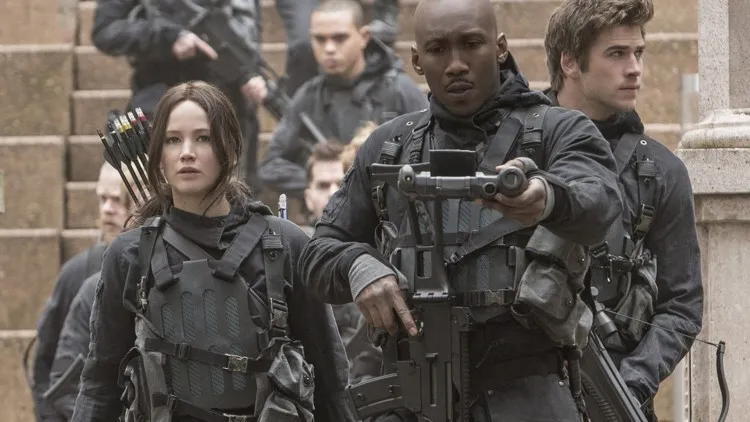
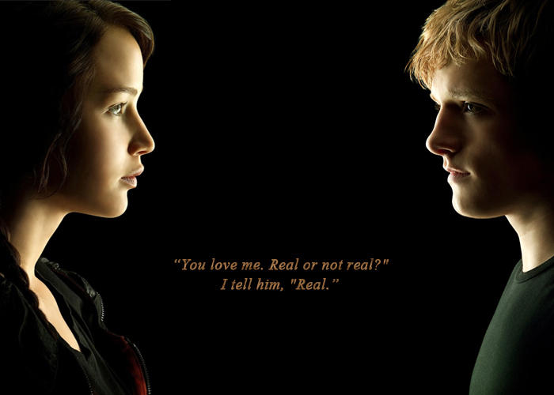
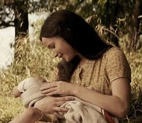

Mockingjay Part 2
76th Hunger Games
District 13 was attacked and so was their mockingjay. Katniss was having a slowly recover from her injuries. Her voice box had been damaged after Peeta tried to choke her to death. Once she felt better and could use her voice she left district 13 secretly and joined Boggs team to find President Snow. Boggs team had Gale, Katniss, Finnick and later on Peeta. They had to use a holo device that showed a holographic map of the Capitol and also showed them the traps also known as "pods." Finnick called this the 76th Hunger Games because it had killing and felt the same way when you play the games. Bogg ends up dying for stepping on a bomb, and Katniss takes over the team. Although Boggs team was to get to President Snow, Katniss had another mission and that was to kill Pesident Snow. Katniss and her team end up ecountering mortal traps, black ooze, lizard mutts, and pods.
Real or Not Real
Peeta is still trying to figure out things because of how the venom has messed with his memories. He doesn't know whats real and whats not real. Peeta has joined Katniss's team and is trying to figure her out. Katniss tells Peeta several facts about him and he still doesn't know what to believe about her. Finnck is listening to their conversation and advises Peeta to ask. Finnick asures him that they will answer him honestly. That's where Peeta got his phrase of real or not real. Throughout the movie Peeta asks Katniss questions and Katniss either says real or not real to his questions. At the end of the movie Katniss and Peeta are laying next to each other and asks Katniss "you love me real or not real" and katniss answers "real."
Love Triangle
Since this is the end of the movies the love triangle ends here. Katniss still cares about Gale but she realizes that her feelings for Peeta are stronger. She doesn't want to live without him. Although Peeta still can't figure out if Katniss is evil or not, Katniss still tries to convince him that she is not mean and cares for him. Peeta uses his real or not real to understand Katniss, but then he is finally convinced that she means no harm. Katniss protects Peeta while running away from danger and Peeta relaizes that she does care about him. Later on Peeta and Gale talk to each other and Peeta is convinced that Katniss loves him more. Gale explains to her that Katniss never kissed him the way she did Peeta and even if she faked it she never did kiss him like that. Gale told Peeta that she loved Peeta and even when he was captured she never stopped worrying about him. At the end Peeta and Katniss end up together and have 2 kids together.